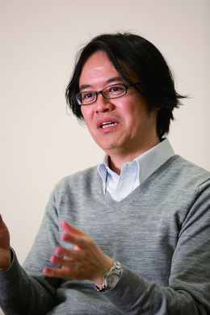
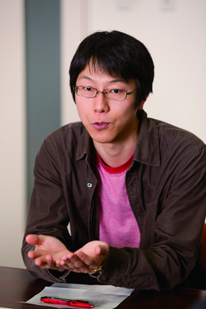
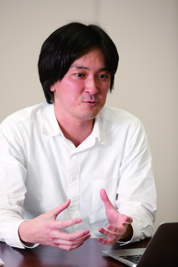
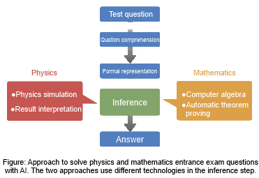

人 工頭脳で数学と物理の問題を解くためには、知識に頼る社会科問題を解くのとはまた違った難しさがある。しかも、数学と物理では共通の方法論と異なる方法論 を必要とするのだという。その現状と課題、そして入試突破というグランドチャレンジ達成後にもたらされるであろう応用技術について、数学と物理の問題を解 くうえで中心的な役割を果たす穴井宏和氏、松崎拓也氏、横野光氏に伺った。

穴井宏和（左）
国立情報学研究所 客員教授
株式会社富士通研究所 ITシステム研究所 主管研究員
九州大学 数理学府・MI研究所 教授
松崎拓也（中央）
名古屋大学 大学院工学研究科 准教授
横野光（右）
国立情報学研究所 社会共有知研究センター 特任助教
人工頭脳で入試問題を解くためのアプローチは、数学と物理では共通する部分と異なる部分がある。人間が問題文の内容を理解するのに対応する最初のステップ は、主に言語処理の手法で行われる。ここで言う言語処理とは、テキストで与えられた問題文をコンピュータが理解できる表現へと変えること。この部分は、数 学と物理では、大まかに見れば共通である。しかし、その先は異なる。数学の場合には、問題文の意味を理解した後、「立式」（式を立てること）を経て、その 式にふさわしい推論・計算アルゴリズム( ソルバー) による処理が実行される。問題文から得られた論理表現と、計算に必要な論理表現との間に存在するギャップを埋めるのが立式というわけだ。
一方、 物理の問題の場合も問題文の意味理解は言語処理によって行われるが、次のステップには「物理シミュレータ」を用いる。物理シミュレータとは、物理現象をシ ミュレーションするソフトの一種。問題の状況のシミュレーションを行い、得られたシミュレーション結果を解釈するという、数学とは異なるステップで問題を 解く。物理分野の問題を担当するNII の横野光氏は次のように説明する。
「人間は問題文の内容を理解して、物理法則を推測し、関係する公式を使って問題を解きます。それに対してコンピュータは、問題文に出てくる状況を実際に物理シミュレータで再現して計測し、得られた結果から選択肢に近いものを探すのです」
例えば、バネと重りの位置関係から物理現象を解く問題なら、さまざまなパラメータで得られるシミュレーション結果を選択肢と照らし合わせて解を探すというわけだ。
東大合格という目標について、数学分野を担当するNIIの松崎拓也氏は次のように語る。
「現時点でセンター試験問題のうち計算機による解法の見通しを得ているものが約5割。二次試験についても、基本的な解法の枠組みはセンター試験と共通。計 算機が得意とするタイプの問題から始めて、解ける問題の範囲を着実に広げていければ、合格点達成が見えてくるはずです」
目標をクリアするためには、何が必要なのだろうか。数学分野を担当し、ソルバーの開発者でもある富士通研究所の穴井宏和氏は次のように話す。
「テキストや図形を式にどう落とすのかに尽きますね。たとえ正しい式でも、変数が多ければ計算量が膨大になってしまう。出題者が想定した解法に従えば、ソ ルバーで解けない入試問題はほとんどない。試験時間内に解くためには、立式が鍵を握っています」問題によっては、複数のソルバーを組み合わせる必要があ る。しかし、立式はソルバーが想定する表現に依存するため、ソルバーの選択も重要な課題というわけだ。

あるいは、現時点では解答を得るのが難しいタイプの問題もある。
「アルゴリズムがわからないとか、人間がどうやって解いているのかわからない問題文もあります。しかし、実際に人間がどう考えているのかは深追いしませ ん。まずは点を取るシステムを考えて、その結果としてよいものができれば、そこで初めて人間の考え方との比較に意味が出てくると思います」（松崎氏）
一方、センター試験の物理の問題については、「全ての問題がシミュレータを使って解けるというわけではなく、課題もある」と横野氏。センター試験では主 に、力学、電磁気、波動、熱力学の4つの分野から出題される。力学と、電磁気のうちの電気については既存の物理シミュレーションで対応できる。これに対し て、波動や熱力学のシミュレーションは複雑であるが、高校物理で学ぶ範囲ではそこまで正確に状況を再現する必要はないため、シミュレーションに依らないア プローチを考える必要がある。
また、筆記がある二次試験のように、起こりうる物理現象をその理由とともに説明し、記述するタイプの問題については、まだ手つかずだ。今後は、物理シミュレータによる予測・列挙を、その他の基盤技術と組み合わせることが、その解決への鍵になるという。
ところで、富士通で開発されてきたソルバーは、従来、ものづくりの設計において、最適解を与える重要なツールとして活用されてきた。しかし、その扱いが容 易でないことから、利用が限られてきたという。 「現場のエンジニアにこそ使ってほしいツールですが、なかなか普及しないのが現状です。プロジェクトでの 成果を活かして、問題文を与えると自動的にソルバーが解答してくれるようになれば、エンジニアにもっと使っていただけるようになるはずです」と穴井氏は期 待する。
言語解析・立式・計算処理のステップを想定した問題設定というのは、単に入試問題を解くためだけでなく、自然言語処理とソルバーという 両方の研究にとっても意義深い。つまり、自然言語処理の立場からは、言語解析のゴールが形式表現として明確かつ厳密に与えられることになり、一方、数式処 理アルゴリズムの立場からは、問題を解く際に必要なノウハウが体系化されるからだ。
「どの問題にどのソルバーが使えるのかが明確になれば、ソルバーの利用が一段と進むでしょう。数学的手法を広めることに貢献できるし、数式処理の計算技術をアピールすることにもつながります」（穴井氏）
一方、グランドチャレンジ達成後の応用面について、松崎氏は次のように語る。
「『何をしたいか』を簡潔に、しかも柔軟に伝えるのが得意な自然言語と、『どう行うか』わかっていることについては凄い力をもつ計算機、じつはバラバラな 方向を向いたこの2つの特性をどうつなげるか、というAIの根本的な問題が剥き出しになっているのが数学の問題。グランドチャレンジを達成することで、人 間と計算機の新しい関係が見えてくるはず」
物理シミュレータを使うことの将来性について、横野氏は、「例えば、テーブルの上を転がるものを見た とき、人はとっさに手を出してテーブルから落ちないようにします。ところが、今のロボットは、転がっているものを認識できても、物理の法則に従ってそれが テーブルから落ちることまでは予測できません。人工頭脳が進展すれば、実世界の状況を理解し、物理法則に従って変化する事象を物理シミュレーションによっ てモデル化し、将来を予測することもできるでしょう」と語る。
今回のチャレンジを通して得られる知見は、例えば知能ロボットなどさまざまな分野にも役立つ可能性がある。今後の進展に期待したい。
（取材・文＝保谷彰彦）